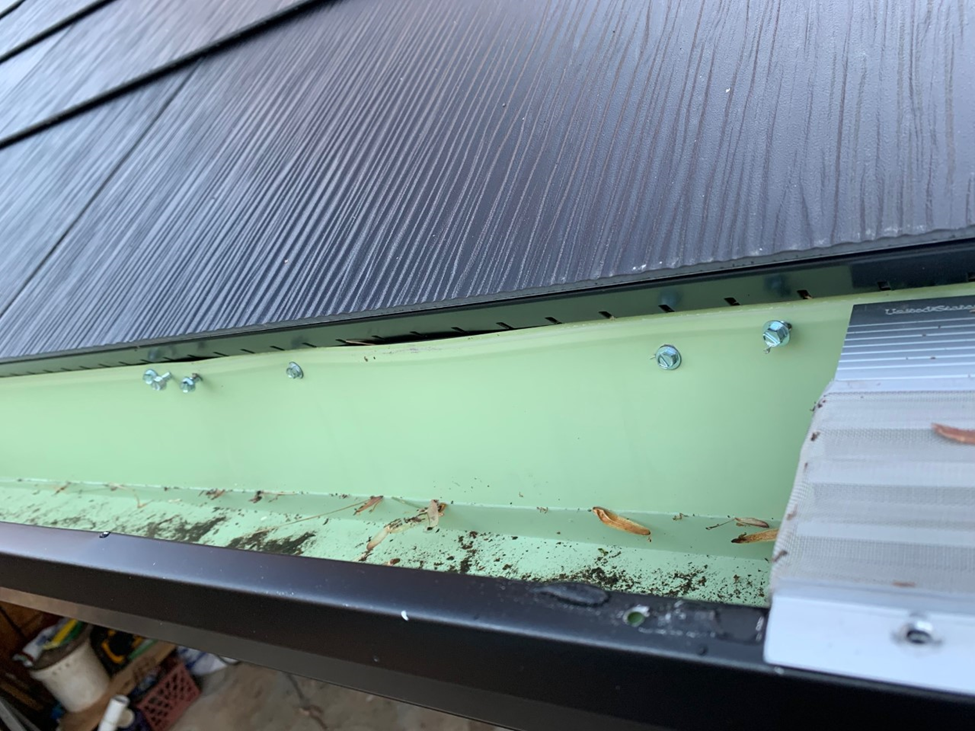
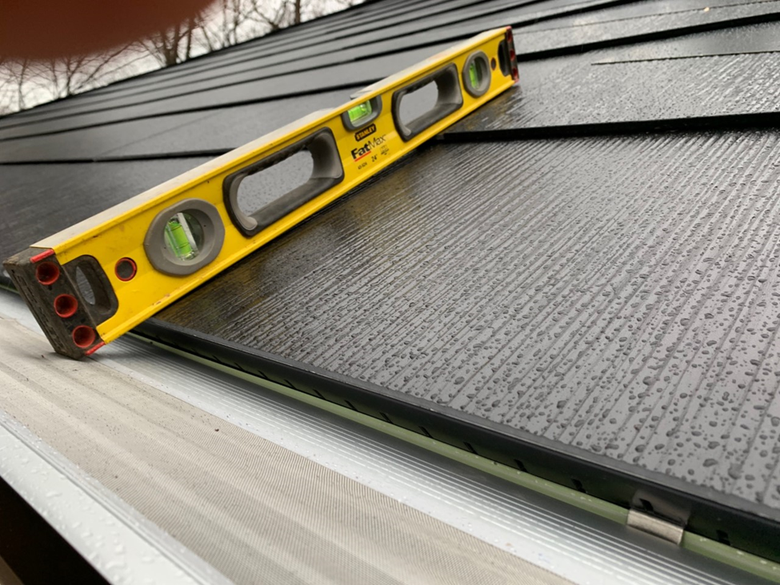
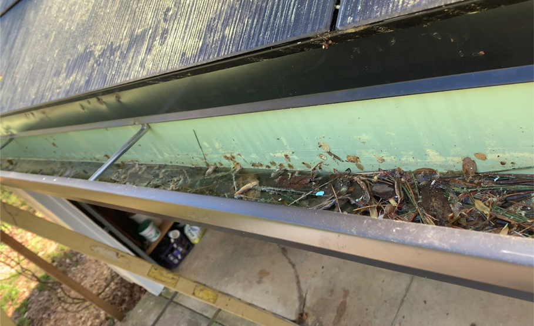

Don't Let Some Knuckle Head Install Your Gutters Like This!!!!!!
Complete Crap
Tesla does recommend 6” gutters and I opted to upgrade to black, dirt shows up less, and also add gutter guards for all the leaves. I crushed my old gutters, brought them to the scrap yard, and made about $70 on the aluminum. At one time Tesla did hire out the gutters but they stopped that around 2021. I wish they hadn’t. The only awful experience I had was the installation of my gutters. The knuckle heads totally screwed them up, pictures provided. The guy thought this was going to be like a metal roof with the water dripping of the edge. Well, you idiot this isn’t a metal roof. The bozos put all these screws into the gutter and drip edge. Very poor installation and now there are hundreds of holes in my new drip edge and new gutters. Other mistakes are there is absolutely no slope on the gutter towards the downspout The gutters were installed against the drip edge and this is allowing water to get between the drip edge and gutter, increasing the moisture on and along my house.

More Crap
The gutters were installed too high. When you get snow on these types of roofs it doesn’t stay very long. You have to be careful because it will all slide off at one huge chunk, the first time this happens it will scare the crap out of you and your dogs, and if your gutters are too high like here it could rip your gutter off.
Lowered Correct
This picture is how I lowered the gutter on the first floor and was able to get at least ¾ inch slope over about a 30 ft span. It took a couple weeks to get this first section done and is why it is so dirty. I also had to calk all these holes in the drip edge. The water will not drip of the panel but will wrap around the panel along the vents and down the drip edge. The gutter needs to go below or even better behind the drip edge. I used a piece of foam to wedge behind the drip edge to get it at an angle and was able raise the gutter higher on the ends, allowing me to get the hanger screws in up behind the drip edge.